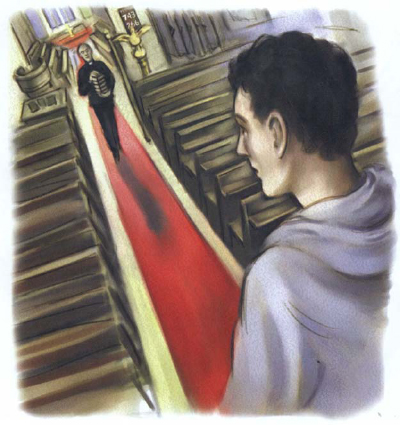

‘Trước tiên, tôi phải tìm được nghĩa trang đó,’ Pete nghĩ. Anh lại nhìn bức ảnh. Anh thấy một phần của nhà thờ trong bức ảnh. Nhưng đó là nhà thờ nào? Anh không biết.
‘Tôi sẽ đến tất cả các nhà thờ trong thành phố,’ anh tự nhủ.
Hai giờ sau, Pete đã rất mệt. Anh đang đi về phía nhà thờ St Mark. Nhà thờ nằm trên đỉnh một ngọn đồi, gần trung tâm thành phố.
‘Liệu đây có phải là nhà thờ trong ảnh không nhỉ?’ Pete nghĩ. ‘Tôi đã đến mười một nhà thờ rồi, và chân tôi đang đau nhức quá!’
Anh bước qua một số cánh cổng lớn và đi vào nghĩa trang.
Và ở đó có cái cây - cái cây trong bức ảnh! Và bên cạnh nó, có một bức tường với một cánh cổng màu xanh lá cây nhỏ.
‘Thurber và người đàn ông to lớn đứng đó cùng nhau,’ Pete nghĩ. ‘Tôi đúng - tôi biết mà! Tôi đã giải được phần đầu tiên của câu đố rồi!’
Không có ai khác ở trong nghĩa trang. Pete bước lên nhà thờ và mở cánh cửa nặng nề. Có một linh mục bên trong nhà thờ. Ông đang đặt một số cuốn sách lên bàn. Ông nhìn lên và mỉm cười với Pete. Ông bước về phía chàng trai trẻ.

Pete đưa cho linh mục xem bức ảnh.
‘Linh mục có biết hai người đàn ông này không?’ anh hỏi.
Linh mục nhìn bức ảnh một cách cẩn thận. Sau đó, ông lên tiếng. ‘Không, tôi xin lỗi,’ ông nói. ‘Tôi không biết họ.’
‘Linh mục có biết một cô gái tóc vàng ngắn và đeo kính tròn nhỏ không?’ Pete hỏi. ‘Cô ấy rất xinh.’
Linh mục lại mỉm cười.
‘Cô ấy có phải là bạn gái của con.7’ ông hỏi.
‘Không phải,’ Pete trả lời. ‘Và tôi không biết tên cô ấy. Nhưng sáng nay tôi đã thấy cô ấy. Cô ấy sợ điều gì đó. Tôi muốn giúp cô ấy.’
Linh mục suy nghĩ một lúc. ‘Tôi đã thấy một cô gái tóc vàng và đeo kính tròn,’ ông nói. ‘Cô ấy thỉnh thoảng đi qua nghĩa trang. Và cô ấy đúng là rất xinh. Nhưng tôi không biết tên cô ấy. Tôi xin lỗi.’
‘Cảm ơn linh mục đã giúp tôi,’ Pete nói.